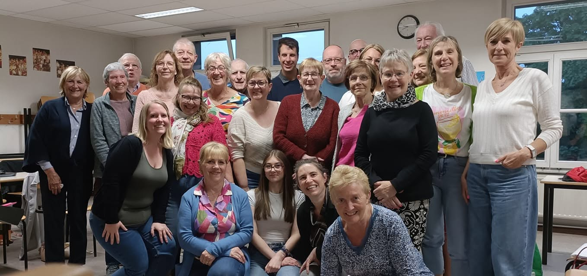
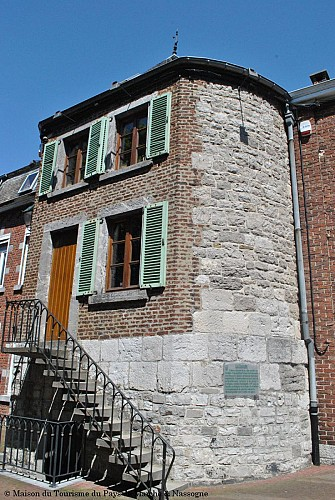
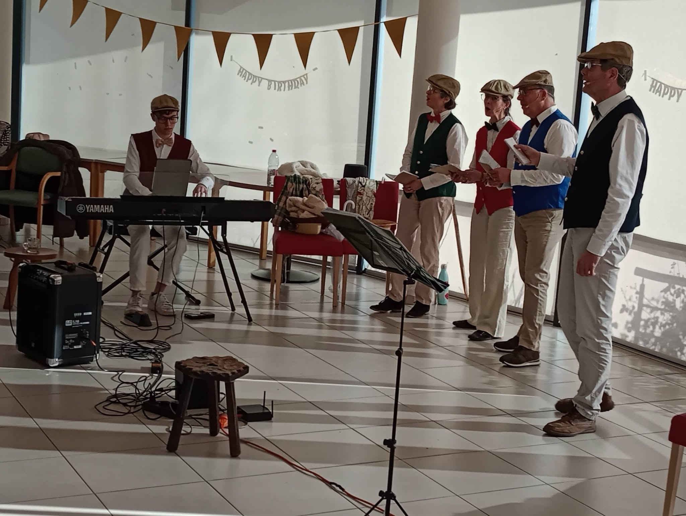
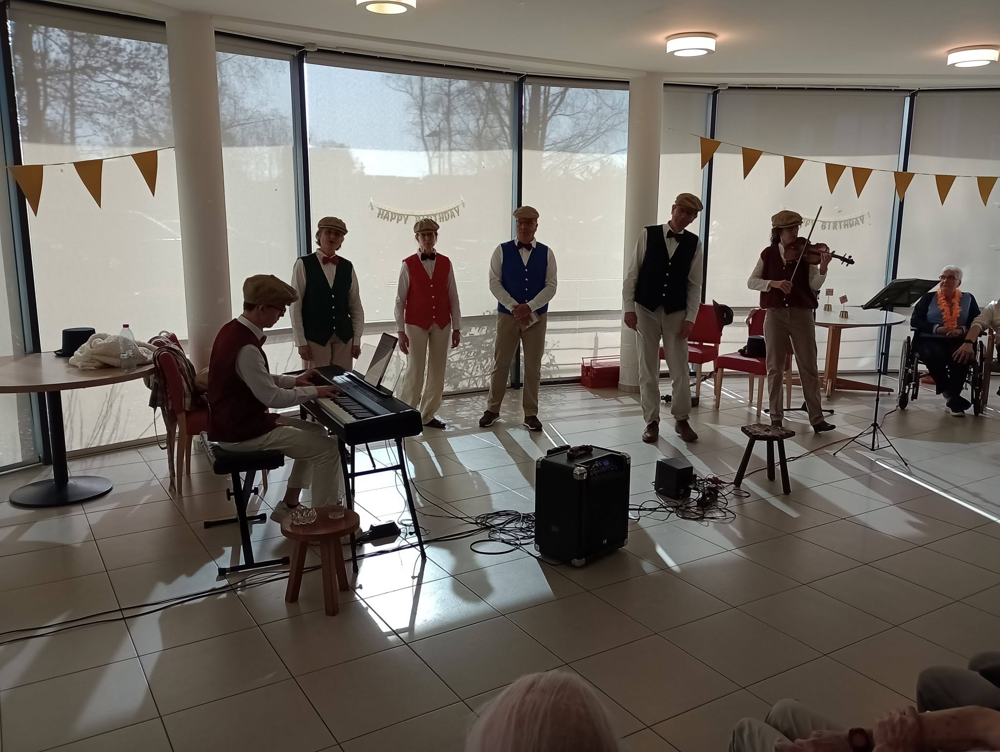
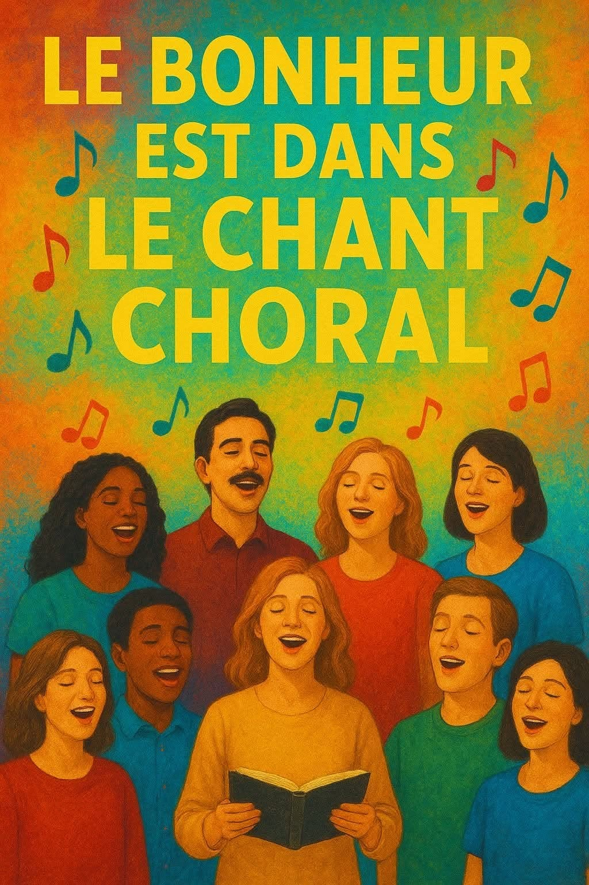
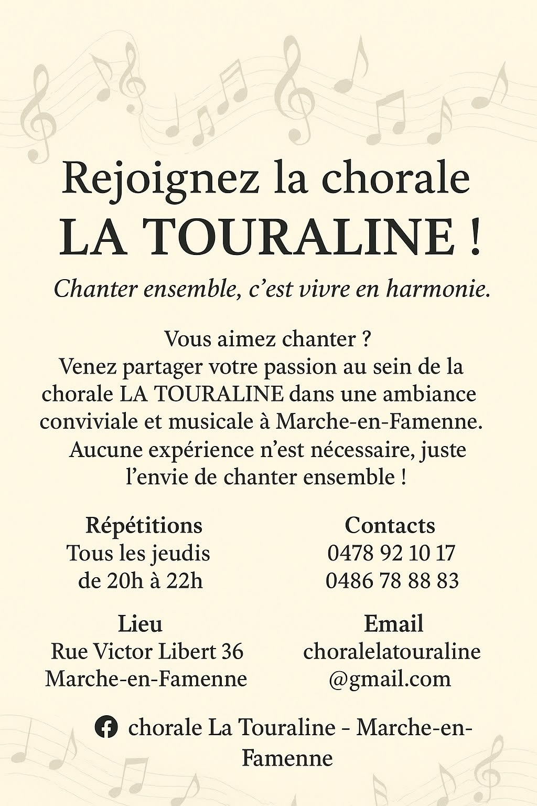
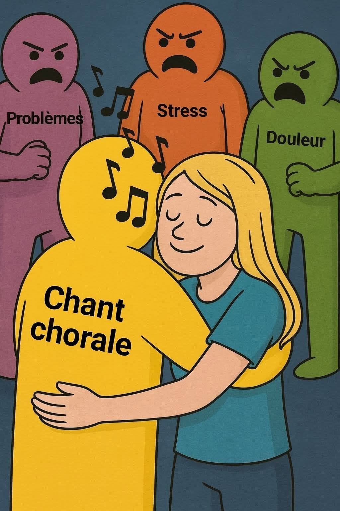

Marche-en-Famenne · Chœur amateur depuis 1982
Chorale La Touraline
Chanter ensemble, c'est vivre en harmonie. Un chœur à trois voix, un répertoire de variété française et une bande d'amis qui partagent le plaisir de chanter.

Nos concerts
Variété française et airs de Noël tout au long de l'année.
Voir les concertsL'histoire de la chorale
Du « Petit royaume » à La Touraline, plus de 40 ans de chant.
DécouvrirAlbums photos
Les moments forts de la chorale, en images.
Voir les photosContacts
L'organe de gestion de l'a.s.b.l. et la direction musicale.
Nous écrireQui sommes-nous ?
Un peu d'histoire
La chorale La Touraline de Marche-en-Famenne a vu le jour en 1982, sous le nom de « Petit royaume », en référence à une chanson de Julos Beaucarne.
Il y a plus de vingt ans, elle a pris son nom actuel en référence au musée marchois « La Tourelle », devenu lui-même le Famenne & Art Museum.
Aujourd'hui, nous faisons partie de la fédération « À Cœur Joie », comme la plupart des chorales de Wallonie et de Bruxelles. Notre répertoire est principalement composé de variété française, et nous abordons aussi des airs traditionnels lors des concerts de Noël.
- Fondée en
- 1982
- Choristes
- ~30
- Voix
- 3
Nous sommes établis en un chœur à trois voix — altos, sopranes et basses — sous la direction musicale de Christine Wéry.

La Tourelle — le monument marchois qui a inspiré notre nom.
Sur scène
Nos concerts
De la variété française aux concerts de Noël où nous abordons les airs traditionnels, nous aimons partager notre musique avec le public — dans la bonne humeur.


Variété française
Le cœur de notre répertoire, travaillé toute l'année.
Concerts de Noël
Des airs traditionnels pour la période des fêtes.
À Cœur Joie
Membre de la fédération des chorales de Wallonie et de Bruxelles.
Vous souhaitez nous rejoindre ?
Venez faire un essai
Il fait bon vivre avec notre trentaine de membres. Les répétitions sont à la fois appliquées et relax (oui, c'est possible !). Il n'est pas indispensable de connaître la musique : la volonté et la bonne humeur suffisent.
🎵 Nous serions heureux d'étoffer notre jeu en accueillant un pupitre de ténors. Et vous ?
Les répétitions
-
Tous les jeudis, de 20h00 à 22h00
Hors jours fériés et congés scolaires.
-
E-square, deuxième étage, salle "La Papote"
Rue Victor Libert 36H, Marche-en-Famenne.
Voir sur la carte -
Aucune expérience requise
La volonté et la bonne humeur suffisent. À bientôt !
En images
Albums photos
Un aperçu de notre vie de chorale : répétitions, concerts et petits clins d'œil musicaux.



Nous contacter
L'équipe de La Touraline
L'organe de gestion de l'a.s.b.l. La Touraline et la direction musicale.
-
Christine Wéry
Cheffe de chœur
christinewery1@gmail.com -
Pierre Vencencius
Président
p.vencencius@gmail.com +32 486 78 88 83 -
Nathalie Decoeur
Vice-présidente & secrétaire
nathalie.decoeur@gmail.com +32 486 78 88 83 -
Marc Hick
Trésorier
cramhick@gmail.com -
Christiane Bellemans
Présidente honoraire & administratrice
cbabeille7@gmail.com -
Véronique Hauchart
Administratrice
veflanto@gmail.com -
Isabelle Mottet
Administratrice
mottet.isabelle@gmail.com -
Annicq Parmentier
Administratrice
annicq.parmentier@gmail.com
Résidence sociale
142 chaussée de Liège
6900 Marche-en-Famenne, Belgique
Téléphone
+32 486 78 88 83